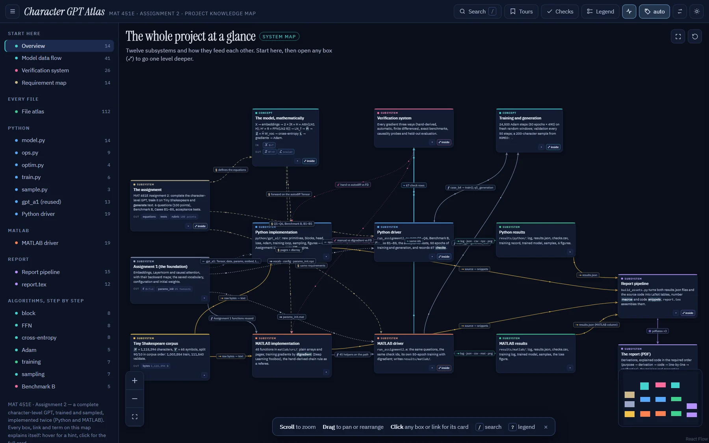

Character-level GPT from scratch
A two-block GPT built from fundamental tensor operations: NumPy with my own reverse-mode autodiff engine, and a MATLAB twin. No PyTorch.

Overview
The assignment: complete a character-level GPT, train it and generate text, using only fundamental tensor operations. I implemented every component twice: in Python on NumPy with a reverse-mode autodiff engine of my own, and in MATLAB with plain arrays and dlgradient.
Every gradient is checked three ways (hand-derived, automatic and finite differences), and the two implementations share check identifiers so that their results can be compared line by line. Trained from different initial weights on different random windows, they end within 0.004 nats of each other.
The report discusses the generalisation gap: the held-out tenth of the corpus contains speakers the training part never shows, so validation loss flattens from about epoch 20 while training loss keeps falling.
What I built
- Model: B = 32, T = 64, d = 64, two blocks, dff = 256, one head; 24 500 Adam steps (50 epochs × 490).
- A reusable autodiff
Tensorwith backward maps for attention, layer norm, GELU, embeddings and the vocabulary projection. - 67 named checks, 38 unit tests, causality probes and benchmark cases, written to
checks.csvby both drivers. - Character GPT Atlas: an interactive, offline map of the whole project, linking every equation to the code that implements it.
A sample
ROMEO: power to Prince? Why should my mistress deight sir, And yet put myself this packlings Return music that I had speak.
200-character sample from the MATLAB model, prompt “ROMEO: ”, temperature 1.
Figures
Run it
$ pip install -r requirements.txt $ python python/run_assignment2.py --steps 500 $ python -m unittest discover -s python/tests $ matlab -batch "run('matlab/run_assignment2.m')"